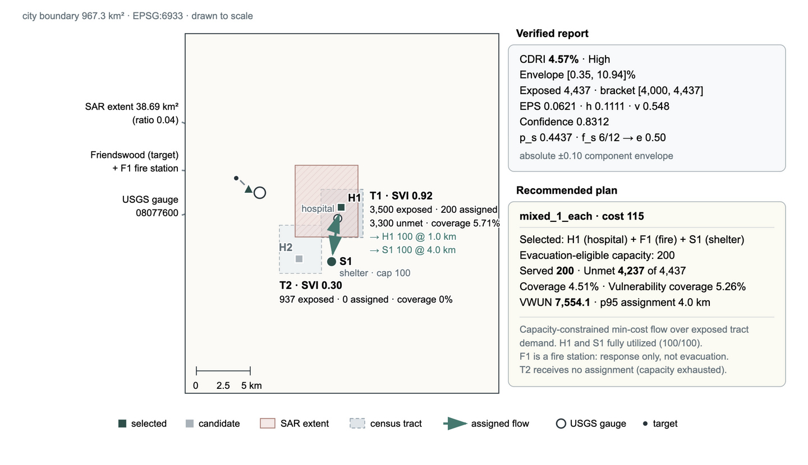

ACM SIGSPATIAL Student Challenge
Beyond Tool Calling
How should a flood response system handle a missing satellite image or an out-of-date reading? The OASIS talk uses a Clear Creek replay to show how DisasterDecider checks the evidence, estimates exposure, and presents response options for human review.
